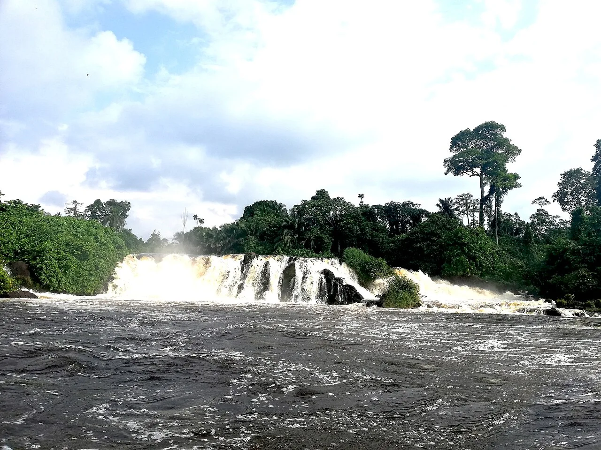
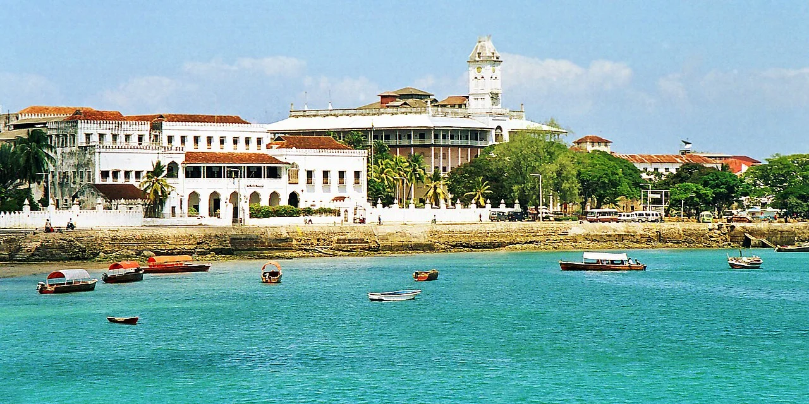

Africa
Cameroon
Volcanic mountains, coastal waterfalls and living royal heritage
5 attractions
6 countries to discover
Find a place that speaks to your curiosity. Explore its landmarks, local food, traditions and everyday adventures.

Africa
Volcanic mountains, coastal waterfalls and living royal heritage

Africa
Island lagoons, forest trails and the flavours of Port Louis

Africa
Serengeti plains, volcanic highlands and Zanzibar's Swahili coast

Africa
Coastal history, forest canopies and the energy of Accra

Africa
Wildlife plains, Rift Valley scenery and Swahili coastal heritage

Africa
Cape mountains, wildlife country and stories that shape a nation